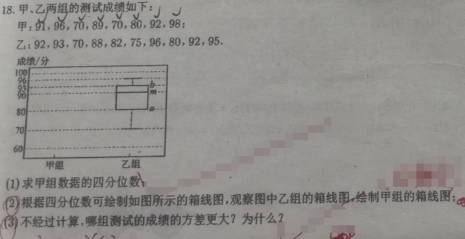

📷 点击查看原图
甲、乙两组测试成绩（单位：分）：
甲：96, 86, 70, 89, 70, 80, 92, 98（共 8 个数据）
乙：92, 93, 70, 88, 82, 75, 96, 80, 92, 95（共 10 个数据）
（1）求甲组数据的四分位数；
（2）根据四分位数可绘制如图所示的箱线图，观察图中乙组的箱线图，绘制甲组的箱线图；
（3）不经过计算，哪组测试的成绩方差更大？为什么？
| 知识点 | 说明 |
|---|---|
| 四分位数 | （下）、（中位数）、（上）； 偶数时取中间两数平均 |
| 箱线图 | 由最小值、、、、最大值 5 个数构成 |
| 箱体长度 | ，反映中间 50% 数据的离散程度 |
| 方差含义 | ，数据越分散越大 |
| 图象判断 | 箱体/须线越长 ⇒ 数据越分散 ⇒ 方差越大 |
将甲组数据从小到大排序：
由于 是偶数，中位数为中间两个数（ 与 ）的平均值：
把数据分成下半与上半各 4 个：
由第一步可得甲组箱线图的五个关键点：
| 最小值 | （中位数） | 最大值 | ||
|---|---|---|---|---|
| 70 | 75 | 87.5 | 94 | 98 |
在图中甲组位置画矩形：左端 ，右端 ，中位线 ；从 画横线到左端，从 画横线到 。
观察箱线图：
📌 来源：江西中考「统计与方差」真题（2020江西 鸡腿规格方差、2025江西宜春二模 折线统计方差，见 m.zxxk.com/soft/46738031.html、51jiaoxi.com/doc-17238521.html）
题1：某班男生身高（cm）数据为 。(1)求这组数据的四分位数 ；(2)写出绘制箱线图所需的 个关键数。
💡 答：；五个数为 。📄 查看详细解答 →
题2：甲、乙两组数据分别为：甲 ，乙 。仅从箱线图的"箱体长度"判断，哪组数据波动更大、方差更大？
💡 答：甲组箱体长度 ，乙组 ，甲组箱体更长 数据更分散 甲组方差更大。📄 查看详细解答 →
题3：用方差公式 计算并比较：甲 与乙 的方差，说明哪组更稳定。
💡 答：甲组方差 ，乙组方差 ，甲组方差更大、波动更剧烈。📄 查看详细解答 →
📌 来源：与 p18"四分位数·箱线图·方差"同主题的进阶练习